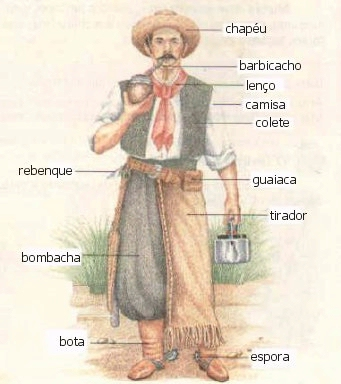

Responder a este comentário
Comorora
por Giba Assis Brasil em 04 de julho de 2009"Como a aurora", convenhamos, não é a melhor maneira de começar um hino. Não tanto pelo duplo sentido sacana: nem mesmo o Mário Lago, em 1941, parecia interesado em comer a Aurora, a não ser que ela fosse sincera. Mas principalmente pelo promíscuo encontro de três vogais e uma semivogal (comOAAUrora), provocando ao mesmo tempo uma sinalefa (o-a), uma crase (a-a) e uma elisão (a-u), e resultando numa pronúncia que a maioria das crianças leva o primário inteiro pra conseguir entender de onde veio: "comorora".
Mas, no caso, não se trata de uma aurora qualquer: estamos falando de uma "aurora precursora", e mais: "precursora do farol da divindade". Pois então. Divindade é qualquer ser divino, inclusive o Ademir da Guia e a Elizeth Cardoso, mas "a divindade", com artigo definido, só pode ser o Deus monoteísta judaico-cristão-muçulmano, também conhecido como "O Cara", embora o Obama tenha outra opinião.
E o tal "farol da divindade"? Farol é aquela construção luminosa para orientar navios, mais recentemente também a luminária dianteira do automóvel e ainda, em São Paulo, aquele artefato orientador do trânsito que nós chamamos de sinaleira e o resto do Brasil, de semáforo. Mas aqui, é claro, temos uma metáfora: farol é "aquilo que ilumina" (do ponto de vista da lâmpada), "aquilo que orienta" (do ponto de vista do navio) ou quem sabe "aquilo que anuncia" (do ponto de vista do faroleiro?). Nessa engenhosa metáfora, "farol da divindade" é a fonte luminosa que anuncia a existência de Deus, aquela bola amarela que nós chamamos de sol. Percebeu? A aurora é o que vem imediatamente antes do nascer do sol, logo ela só poderia ser a "precursora do farol da divindade". Claro que a maioria das pessoas canta esse verso duas mil vezes sem se dar conta. Melhor pra elas.
Mas a metáfora explicada é só a primeira parte de uma comparação anunciada: "Foi o vinte de setembro o precursor da liberdade". Assim como a aurora todo dia precede o nascer do sol, também o 20 de setembro teve que acontecer para que viesse... a liberdade! A rima divindade/ liberdade é fraquinha, mas ruim mesmo é a comparação que precisa usar duas vezes uma palavra tão pouco usual como precursor/ precursora. E pior ainda é o sentido. 20 de setembro, vocês lembram, foi o dia de 1835 em que os revoltosos farroupilhas invadiram Porto Alegre e puseram a correr o presidente da província, dando início à guerra de 10 anos contra o governo imperial. E que terminou com a derrota dos farrapos, se é que eu me lembro bem. Mas, enfim, precisou acontecer o 20 de setembro pra que nós tivéssemos a liberdade que temos hoje. Digamos assim.
Mas o estribilho começa com "Mostremos valor, constância nessa ímpia e injusta guerra". Esquece mais este péssimo encontro de vogais: eu sempre cantei "impinjusta" e jurava que tinha a ver com impingir: uma guerra injustamente impingida. Esquece principalmente que não faz muito sentido chamar de ímpia (que não tem piedade) e injusta (que não procede com justiça) uma guerra que nós mesmos começamos - já que, afinal, não há registro de uma guerra que tenha sido piedosa ou justa. Presta atenção na forma verbal, que é o que importa: "mostremos" é imperativo afirmativo, o que supõe que a tal guerra esteja ainda em andamento.
Claro: sabemos que o maestro mineiro Joaquim José Mendanha compôs o Hino Rio-grandense em 1838, logo após a vitória dos farroupilhas no combate de Rio Pardo, portanto em plena impinjusta, e num momento em que a tal liberdade parecia ao alcance das patas do cavalo do General Neto. Mas sabemos também que a música composta por Mendanha não tinha letra, e que os versos escritos na época pelo capitão Serafim José de Alencastro "não pegaram", e que uma segunda letra, escrita no ano seguinte por autor desconhecido também terminou esquecida. A terceira versão, a que chegou até nós, foi composta por Francisco Pinto da Fontoura, que na época era conhecido como "Chiquinho da Vovó", mas isso alguns anos depois de Caxias, do tratado do Poncho Verde e do fim da guerra civil.
Portanto não somos apenas nós, crianças gaúchas, que aprendemos desde o jardim de infância a comororar e fingir ainda estar em guerra contra o império brasileiro e suas impinjustiças: o próprio Chiquinho da Vovó já fingia, e o Instituto Histórico e Geográfico fingiu ao adotar esta letra em 1933 (contra o voto de Otelo Rosa, diga-se em sua defesa) e o Governo do Estado seguiu fingindo em 1966 ao se render à pressão do MTG e torná-la oficial.
Vamos deixar de lado a segunda estrofe, e mesmo a terceira, suprimida pela ditadura nos anos 1960. Até porque o refrão ainda não acabou. Falta a chave de ouro: "Sirvam nossas façanhas de modelo a toda terra". Façanha, segundo o Houaiss, pode ser um "feito heroico, proeza impressionante" ou então uma "ação imprudente, escandalosa ou simplesmente brincalhona". Mas é difícil imaginar que uma imprudência, um escândalo ou uma brincadeira possam servir "de modelo a toda terra".
Ou seja: considerando que nós perdemos, e feio, a guerra que rimava com toda essa terra, dá pra dizer que este é o verso que melhor sintetiza a nossa imensa pretensão gaúcha - mais ainda que o "sou maior que a história grega" do Marco Aurélio Campos (afinal, quem são esses gregos?). O verso que certamente fez os tradicionalistas optarem pela terceira versão do hino - e que talvez tenha feito corar o doutor Otelo Rosa, que só por essa hipótese já merece a minha simpatia. O verso que fez do Chiquinho da Vovó um poeta.

As façanhas não aparecem na ilustração.
{kind=link}
TEM MAIS
Mais sobre a história do Hino Rio-grandense no sítio da CBTG.
Um descendente do autor da primeira letra defende a memória de seu antepassado mas se confunde e reproduz a segunda versão.
Biografia do Maestro Mendanha na Wikipédia.